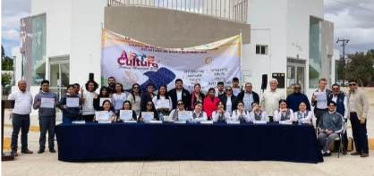

La época dorada de San Ignacio, Baja California Sur, un lugar que dejo huella en muchos de los corazones. Un grupo de persona relata lo que fue vivir en el pueblo antes de la llegada de la tecnología, y que, a pesar del haber carecido de algunas necesidades, ha sido el lugar más bonito para crecer y desarrollar experiencias, que a pesar de ser un lugar pequeño.
Durante la época de los 60’s a 80’s la convivencia era muy diferente. Los jóvenes tendían a mostrar respeto por los mayores del pueblo. Era muy común que al tratar a una persona mayor se utilizaban las palabras “Don”, “Doña”, “Sr” o “Sra” al inicio de su nombre, pues era una forma de transmitir el respeto. Por otro lado, tanto la juventud como las personas adultas, rendían veneración por la religión y a las tradiciones del pueblo.
El pasado 19 de enero del 2025, en el pueblo de San Ignacio, se suscitó un evento cultural en
honor a la conmemoración de los 297 años de la fundación de la misión de San Ignacio de
Loyola, fundada por el padre Juan bautista Luyando.
Una sociedad civil vio conveniente la realización de las conmemoraciones en honor a la misión,
que demostraran parte de la cultura que embarga a la comunidad, por lo que tiempo antes de
dicho evento se solicitó a poyo al ayuntamiento de Mulegé para contar con los permisos y
personal necesarios.
Intriga y orgullo: Arte y cultura 2024
Las nuevas políticas de Donald Trump: Un golpe a los derechos migrantes.